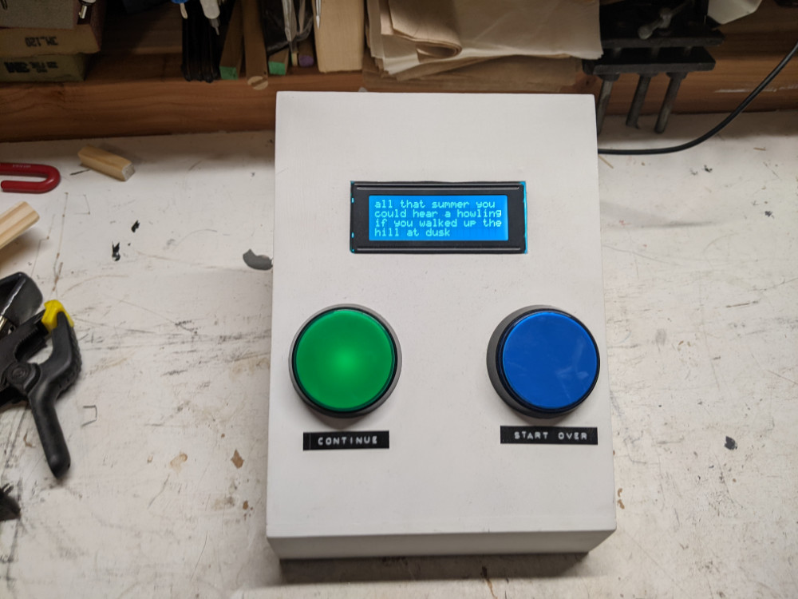

all that summer you could hear a howling
interactive poem
a randomized, branching narrative poem. at each step there are multiple different paths the story could take and one is randomly picked by the device itself - imagine a choose-your-own-adventure story but someone else is making the choices and you don't know what they are. a recent video explaining and demonstrating the piece for a show submission can be seen here.
i built this using an arduino but the way arduinos (and c in general) handles text is clumsy and i would not recommend using an arduino for this type of project to anyone else and if i could go back, i would have used some other microcontroller, probably something i could have programmed in python. i had to cut a lot of material from the poem to get it to fit on an arduino mega and then i had to do a lot of really weird memory manipulation tricks that by all accounts should not work to store the poem.
when i built this in late 2019, it was very important to me that it was a physical device that you had to be standing right in front of to experience, that even though it was a digital work, you had to go to see it. i think i was going for a kind of forced intimacy with the poem. but after the last few years, i have rethought this approach and i would eventually like to port it to javascript and have it here on this web page for anyone to experience.